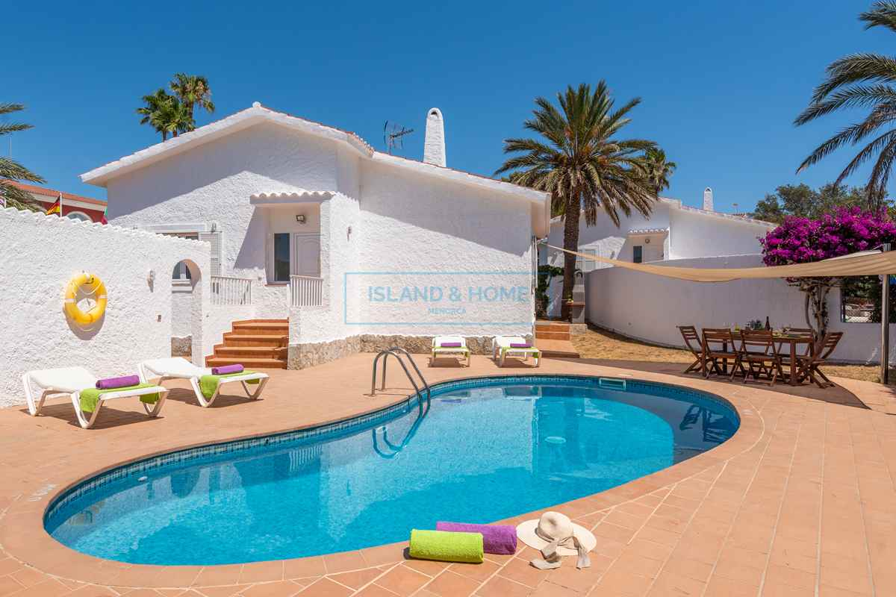

€550.000
Son Bou, Alaior, Menorca, Spain
Open the listingCharacter bargain in Son Bou: whitewashed villa with palm and bougainvillea garden around a built kidney private pool, tourist licence and south-facing terrace — cozy Menorcan rather than sleek newbuild. Distinct from board son-bou (€1.2M / 231 m²) and son-bou-hill.
Opened 10 Sep 2026. Asking 550.000 €. IH card: 2 bed / 2 bath + private pool + tourist licence + off-street parking; ~15 min walk to Son Bou beach. Hero confirms kidney pool, whitewash and character planting. For Sale. Not a fixer / not obra nueva.